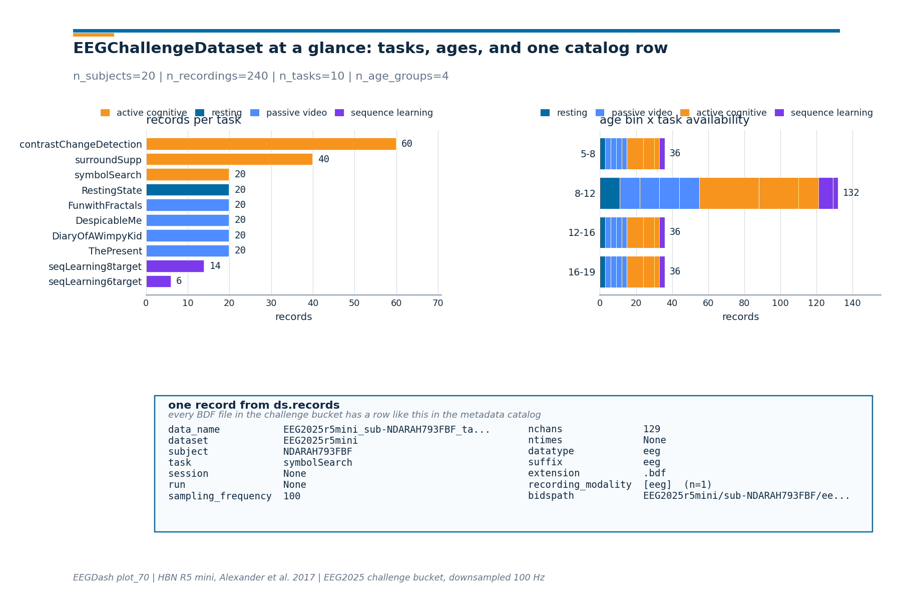

Note
Go to the end to download the full example code or to run this example in your browser via Binder.
How do I get started with the EEG2025 Foundation Challenge dataset?#
Difficulty 1-2 | Runtime: 10s | Compute: CPU
The EEG2025 Foundation Challenge ships its own loader,
EEGChallengeDataset, on top of the same
eegdash infrastructure that powers
EEGDashDataset. The data pool is the
Healthy Brain Network release (HBN; Alexander et al. 2017), reachable
through NEMAR [Delorme et al., 2022]: every
recording is downsampled from 500 Hz to 100 Hz, band-pass filtered
0.5-50 Hz, and shipped via a fixed S3 bucket so the leaderboard contract
stays reproducible [Cisotto and Chicco, 2024]. This tutorial walks through
the loader, surfaces the task taxonomy, the participant-level metadata,
and the official catalog row a single recording carries. The deliverable
is one pandas.DataFrame with records-per-task counts and one
three-panel figure rendered from the live metadata.
Keywords: EEG2025, dataset, basics
Learning objectives#
Build
EEGChallengeDatasetfor a given release (R1-R11) withmini=Trueand read therelease/miniattributes back.Enumerate the HBN task taxonomy (resting, passive video, active cognitive, sequence learning) from
ds.description['task']without downloading the recordings.Inspect the per-recording metadata catalog row: BIDS entities, sampling frequency, channel count, and the participants.tsv extras.
Verify the strict-subset invariant
set(mini_subjects).issubset(full_subjects)and contrast the loader againstEEGDashDatasetfor the same subjects.Read the leaderboard contract: see EEGDash objects: EEGDash, EEGDashDataset, EEGChallengeDataset and the EEG2025 challenge site for evaluation rules.
Validate your result#
Release Check. Confirm that
ds.releasematches your requested release (e.g., “R5”).Task Taxonomy. Verify that task names like
RestingStateandcontrastChangeDetectionappear in your task counts.Mini-Subset. If
mini=True, you should see exactly 8 subjects (or as defined by the release) for a fast local run.
Requirements#
About 1 min on CPU on first run; under 10 s once the metadata catalog is cached.
Network on first call (~1 MB into
cache_dirfor the catalog query). The challenge BDF files are not eagerly downloaded; that happens lazily whenrecord.rawis accessed or a Braindecode pipeline pulls it.Prerequisites: Find datasets with the EEGDash API, Load one EEG recording.
Concept: EEGDash objects: EEGDash, EEGDashDataset, EEGChallengeDataset.
Setup. np.random.seed keeps any later sampling reproducible; the
warning filter silences a pandas FutureWarning raised by the
metadata catalog inside the constructor.
import os
import warnings
from pathlib import Path
import matplotlib.pyplot as plt
import numpy as np
import pandas as pd
import eegdash
from eegdash import EEGChallengeDataset, EEGDashDataset
from eegdash.const import (
RELEASE_TO_OPENNEURO_DATASET_MAP,
SUBJECT_MINI_RELEASE_MAP,
)
from eegdash.viz import use_eegdash_style
use_eegdash_style()
warnings.simplefilter("ignore", category=FutureWarning)
np.random.seed(42)
cache_dir = Path(
os.environ.get("EEGDASH_CACHE_DIR", str(Path.home() / ".eegdash_cache"))
)
cache_dir.mkdir(parents=True, exist_ok=True)
print(f"eegdash version: {eegdash.__version__}")
print(f"cache directory: {cache_dir}")
eegdash version: 0.8.2
cache directory: /home/runner/eegdash_cache
Two loaders, one catalog: the mental model#
EEGDashDataset is a thin query layer over the
eegdash metadata catalog: pass any combination of BIDS entities and it
returns every match. EEGChallengeDataset is a
pre-baked recipe on top of that:
EEGDashDataset EEGChallengeDataset
(any BIDS query on the (release-pinned recipe on top of
metadata catalog) EEGDashDataset)
+-----------------------+ +------------------------------+
| dataset='ds005509', | | release='R5', mini=True |
| subject='NDARAH...' | | - dataset = 'EEG2025r5mini'|
| task='symbolSearch' | -----> | - subject = curated 20 |
| -> records, BIDS meta | | - s3 bucket = challenge |
+-----------------------+ | - cache id = isolated |
| -> records, BIDS meta |
+------------------------------+
raw OpenNeuro files (500 Hz) preprocessed BDFs (100 Hz,
0.5-50 Hz pass-band)
Why two classes? The challenge fixes a frozen subject pool per release (R1 to R11; HBN), preprocesses each recording (Cz reference, downsample, band-pass), and exposes a “mini” subset of 20 subjects per release for fast iteration. Mixing those preprocessed cubes with raw OpenNeuro pulls would silently break the leaderboard contract, so the two classes stay separate even though they share the same lazy-loading machinery.
What does EEGChallengeDataset expose?#
Before instantiating one, list the public methods and properties on the
class. The release, mini, description, records, and
datasets names are the ones the rest of the tutorial leans on.
challenge_attrs = sorted(
name for name in dir(EEGChallengeDataset) if not name.startswith("_")
)
pd.DataFrame({"attribute": challenge_attrs}).head(20)
Step 1: Build EEGChallengeDataset(release='R5', mini=True)#
Run. Pick release R5 because it ships the full HBN task
protocol and 20 mini subjects (every release does). download
defaults to True for the constructor itself, but no S3 traffic
happens until a call asks for record.raw, the metadata catalog
query alone is enough to enumerate the task taxonomy.
RELEASE = "R5"
ds_mini = EEGChallengeDataset(release=RELEASE, cache_dir=str(cache_dir), mini=True)
n_mini_records = len(ds_mini.records)
n_mini_subjects = ds_mini.description["subject"].nunique()
pd.Series(
{
"release": ds_mini.release,
"mini": ds_mini.mini,
"n_records": n_mini_records,
"n_subjects": int(n_mini_subjects),
"s3_bucket": ds_mini.s3_bucket,
"OpenNeuro id": RELEASE_TO_OPENNEURO_DATASET_MAP[RELEASE],
},
name="value",
).to_frame()
╭────────────────────── EEG 2025 Competition Data Notice ──────────────────────╮
│ This object loads the HBN dataset that has been preprocessed for the EEG │
│ Challenge: │
│ * Downsampled from 500Hz to 100Hz │
│ * Bandpass filtered (0.5-50 Hz) │
│ │
│ For full preprocessing applied for competition details, see: │
│ https://github.com/eeg2025/downsample-datasets │
│ │
│ The HBN dataset have some preprocessing applied by the HBN team: │
│ * Re-reference (Cz Channel) │
│ │
│ IMPORTANT: The data accessed via `EEGChallengeDataset` is NOT identical to │
│ what you get from EEGDashDataset directly. │
│ If you are participating in the competition, always use │
│ `EEGChallengeDataset` to ensure consistency with the challenge data. │
╰──────────────────────── Source: EEGChallengeDataset ─────────────────────────╯
[05/30/26 11:44:39] INFO Auto-corrected misrouted dataset.py:413
storage.base for dataset
EEG2025r5mini: None ->
s3://nemar/EEG2025r5mini
Step 2: The HBN task taxonomy#
Predict. Before running the next cell, write down: how many distinct tasks do you expect on the R5 mini release? Recall the HBN protocol covers a resting-state run, four passive video clips, three active cognitive tasks (contrast change detection, surround suppression, symbol search), and two sequence-learning variants (Alexander et al. 2017, sec. 4.4).
Run. ds.description is a pandas.DataFrame with one
row per recording. The task column carries the BIDS task entity,
untouched by the preprocessing pipeline.
task_counts = ds_mini.description["task"].value_counts().to_dict()
n_tasks = len(task_counts)
pd.Series(task_counts, name="records").rename_axis("task").to_frame()
Investigate. A few observations from the count above. The active
cognitive tasks (contrastChangeDetection, surroundSupp) appear
multiple times per subject because HBN records them across two or
three runs. The passive videos (DespicableMe, ThePresent,
DiaryOfAWimpyKid, FunwithFractals) are one run per subject.
seqLearning6target and seqLearning8target are present for a
subset of the cohort because the sequence-learning protocol was added
mid-study.
Step 3: The participant-level metadata#
Run. ds.description carries every BIDS entity plus the
columns from participants.tsv: age, sex, the four CBCL summary
scores (p_factor, attention, internalizing,
externalizing), the EHQ handedness total, and a per-task
availability flag (available / not available) for the ten HBN
tasks. The next cell surfaces the columns at a glance.
metadata_columns = list(ds_mini.description.columns)
pd.DataFrame({"column": metadata_columns}).head(30)
Step 4: Build an age x task availability matrix#
HBN spans children to young adults, so task coverage shifts with age: the resting-state and passive-video runs are present at every age, whereas sequence learning was added later in the protocol. Bin the ages into four buckets and pivot.
age_bins = pd.IntervalIndex.from_tuples(
[(5, 8), (8, 12), (12, 16), (16, 19)], closed="left"
)
age_labels = ["5-8", "8-12", "12-16", "16-19"]
desc = ds_mini.description.copy()
desc["age_bin"] = pd.cut(
desc["age"], bins=[5, 8, 12, 16, 19], right=False, labels=age_labels
)
age_task_matrix = (
desc.groupby(["age_bin"], observed=False)["task"]
.value_counts()
.unstack(fill_value=0)
.reindex(columns=list(task_counts.keys()), fill_value=0)
)
age_task_matrix
Step 5: One catalog row, fully expanded#
Every BDF file in the challenge bucket has a row in the metadata
catalog with the BIDS entities, the storage descriptor, and the
participants.tsv extras. ds.records[0] is exactly that row,
returned as a Python dict. The next cell renders it as a
pandas.DataFrame so the long fields stay readable.
sample_record = dict(ds_mini.records[0])
record_view = pd.Series(
{k: v for k, v in sample_record.items() if k != "_id"},
name="value",
).to_frame()
record_view.head(20)
Investigate. A handful of fields are load-bearing for downstream code:
data_nameis the unique BDF filename inside the challenge bucket; the lazyrecord.rawloader keys on it.datasetis"EEG2025r5mini", not the OpenNeuro id; the dataset id pins the cache folder so preprocessed and raw pulls do not collide.sampling_frequencyis100.0(downsampled from the original 500 Hz), andnchansis the post-Cz-reference channel count.storagecarries the S3 backend descriptor (s3://nmdatasets/NeurIPS25/...).
Step 6: Render the live numbers as a 3-panel figure#
The drawing helpers live in a sibling _challenge_basics_figure
module so the rendering plumbing stays out of this tutorial. Panel 1
is the records-per-task bar chart from Step 2; panel 2 is the age x
task matrix from Step 4; panel 3 is the catalog row from Step 5.
from _challenge_basics_figure import draw_challenge_basics_figure
# Augment the catalog row with the live subject count so the figure
# subtitle can carry it without an extra parameter.
sample_for_figure = dict(sample_record)
sample_for_figure["__n_subjects"] = int(n_mini_subjects)
fig = draw_challenge_basics_figure(
task_counts=task_counts,
age_task_matrix=age_task_matrix,
sample_metadata_row=sample_for_figure,
plot_id="plot_70",
)
plt.show()

Step 7: Verify the strict-subset invariant#
Run. mini=True substitutes a curated subject list (20 per
release, frozen in SUBJECT_MINI_RELEASE_MAP)
and renames the dataset id to EEG2025r5mini for cache isolation.
Build the full release the same way and check the strict-subset
claim.
ds_full = EEGChallengeDataset(release=RELEASE, cache_dir=str(cache_dir), mini=False)
mini_subjects = sorted(set(ds_mini.description["subject"]))
full_subjects = sorted(set(ds_full.description["subject"]))
assert ds_mini.release == RELEASE, "release attribute must match the request"
assert ds_mini.mini is True, "mini=True must be honoured"
assert len(mini_subjects) == 20, "every challenge release lists 20 mini subjects"
assert set(mini_subjects).issubset(set(full_subjects)), (
"mini subjects must all appear in the full release"
)
assert len(mini_subjects) < len(full_subjects), (
"mini must be a strict subset, not equal"
)
ratio = len(mini_subjects) / len(full_subjects)
pd.Series(
{
"|mini|": len(mini_subjects),
"|full|": len(full_subjects),
"|mini| / |full|": f"{ratio:.2%}",
"n_records mini": n_mini_records,
"n_records full": len(ds_full.records),
},
name="value",
).to_frame()
╭────────────────────── EEG 2025 Competition Data Notice ──────────────────────╮
│ This object loads the HBN dataset that has been preprocessed for the EEG │
│ Challenge: │
│ * Downsampled from 500Hz to 100Hz │
│ * Bandpass filtered (0.5-50 Hz) │
│ │
│ For full preprocessing applied for competition details, see: │
│ https://github.com/eeg2025/downsample-datasets │
│ │
│ The HBN dataset have some preprocessing applied by the HBN team: │
│ * Re-reference (Cz Channel) │
│ │
│ IMPORTANT: The data accessed via `EEGChallengeDataset` is NOT identical to │
│ what you get from EEGDashDataset directly. │
│ If you are participating in the competition, always use │
│ `EEGChallengeDataset` to ensure consistency with the challenge data. │
╰──────────────────────── Source: EEGChallengeDataset ─────────────────────────╯
[05/30/26 11:44:41] INFO Auto-corrected misrouted dataset.py:413
storage.base for dataset EEG2025r5:
None -> s3://nemar/EEG2025r5
Step 8: Same subjects, two views via EEGDashDataset#
Run. Pulling the same subject through
EEGDashDataset returns the raw OpenNeuro
recording (500 Hz, no challenge band-pass). The leaderboard contract
explicitly forbids mixing the two views in a submission.
ds_eegdash = EEGDashDataset(
cache_dir=str(cache_dir),
dataset=RELEASE_TO_OPENNEURO_DATASET_MAP[RELEASE],
subject=mini_subjects[0],
)
pd.Series(
{
"EEGDashDataset records (raw 500 Hz)": len(ds_eegdash.records),
"EEGChallengeDataset records (mini, 100 Hz)": n_mini_records,
"Same metadata catalog?": "yes",
"Same preprocessing?": "no - challenge ships preprocessed BDFs",
},
name="value",
).to_frame()
╭────────────────────── EEG 2025 Competition Data Notice ──────────────────────╮
│ This notice is only for users who are participating in the EEG 2025 │
│ Competition. │
│ │
│ EEG 2025 Competition Data Notice! │
│ You are loading one of the datasets that is used in competition, but via │
│ `EEGDashDataset`. │
│ │
│ IMPORTANT: │
│ If you download data from `EEGDashDataset`, it is NOT identical to the │
│ official │
│ competition data, which is accessed via `EEGChallengeDataset`. The │
│ competition data has been downsampled and filtered. │
│ │
│ If you are participating in the competition, │
│ you must use the `EEGChallengeDataset` object to ensure consistency. │
│ │
│ If you are not participating in the competition, you can ignore this │
│ message. │
╰─────────────────────────── Source: EEGDashDataset ───────────────────────────╯
A common mistake, and how to recover#
Run. Typing the release identifier wrong ("r5" instead of
"R5", or "R12") raises ValueError at construction time
, before any S3 traffic happens. We trigger the error on purpose so
the failure mode is visible.
try:
_bogus = EEGChallengeDataset(
release="R12", # there is no R12; the map only goes up to R11
cache_dir=str(cache_dir),
mini=True,
)
except ValueError as exc:
print(f"Caught {type(exc).__name__}: {str(exc)[:120]}...")
available = sorted(
RELEASE_TO_OPENNEURO_DATASET_MAP.keys(), key=lambda s: int(s[1:])
)
print(f"Recovery: use one of {available}")
Caught ValueError: Unknown release: R12, expected one of ['R11', 'R10', 'R9', 'R8', 'R7', 'R6', 'R4', 'R5', 'R3', 'R2', 'R1']...
Recovery: use one of ['R1', 'R2', 'R3', 'R4', 'R5', 'R6', 'R7', 'R8', 'R9', 'R10', 'R11']
Modify: pick a different release#
Your turn. Switch RELEASE to "R2" (a smaller release) and
re-check the strict-subset invariant. The 20 mini subjects per release
are different by design, but the relationship mini is a subset of
full holds for every release in the map.
ds_alt = EEGChallengeDataset(release="R2", cache_dir=str(cache_dir), mini=True)
alt_subjects = set(ds_alt.description["subject"])
assert alt_subjects == set(SUBJECT_MINI_RELEASE_MAP["R2"]), (
"mini subjects must equal SUBJECT_MINI_RELEASE_MAP[release]"
)
pd.Series(
{
"release": ds_alt.release,
"n_subjects": len(alt_subjects),
"first record dataset id": ds_alt.records[0]["dataset"],
"first record task": ds_alt.records[0]["task"],
},
name="value",
).to_frame()
╭────────────────────── EEG 2025 Competition Data Notice ──────────────────────╮
│ This object loads the HBN dataset that has been preprocessed for the EEG │
│ Challenge: │
│ * Downsampled from 500Hz to 100Hz │
│ * Bandpass filtered (0.5-50 Hz) │
│ │
│ For full preprocessing applied for competition details, see: │
│ https://github.com/eeg2025/downsample-datasets │
│ │
│ The HBN dataset have some preprocessing applied by the HBN team: │
│ * Re-reference (Cz Channel) │
│ │
│ IMPORTANT: The data accessed via `EEGChallengeDataset` is NOT identical to │
│ what you get from EEGDashDataset directly. │
│ If you are participating in the competition, always use │
│ `EEGChallengeDataset` to ensure consistency with the challenge data. │
╰──────────────────────── Source: EEGChallengeDataset ─────────────────────────╯
[05/30/26 11:44:47] INFO Auto-corrected misrouted dataset.py:413
storage.base for dataset
EEG2025r2mini: None ->
s3://nemar/EEG2025r2mini
Make: a release-by-release tabulation#
Mini-project. Tabulate |mini| versus |full| for every
release in RELEASE_TO_OPENNEURO_DATASET_MAP.
The cell below does the loop on the mini side without touching the
full pool (so it stays fast); the |full| column is read straight
from the participants.tsv via the metadata catalog.
release_table_rows = []
for release in sorted(
RELEASE_TO_OPENNEURO_DATASET_MAP.keys(), key=lambda s: int(s[1:])
):
release_table_rows.append(
{
"release": release,
"OpenNeuro id": RELEASE_TO_OPENNEURO_DATASET_MAP[release],
"|mini|": len(SUBJECT_MINI_RELEASE_MAP[release]),
}
)
pd.DataFrame(release_table_rows)
Result#
We loaded the R5 mini release, surfaced the HBN task taxonomy (10 tasks across four families), built an age x task availability matrix, and rendered the catalog row for one recording. Reproducing this without the loader would take a custom S3 listing, a custom cache key, and a custom subject filter; the loader rolls all three into one constructor call (Cisotto & Chicco 2024 would say: do not rebuild what the dataset class already enforces).
Wrap-up#
EEGChallengeDataset is
EEGDashDataset with three rails attached: a
release-to-OpenNeuro map, a frozen mini subject list per release, and
a fixed challenge S3 bucket. Use mini=True while iterating; switch
to mini=False for a final submission; never mix challenge data
with raw EEGDashDataset pulls because the
0.5-50 Hz pass-band and 100 Hz downsample make the two views
incompatible. Next:
Pretrain on resting-state, fine-tune on contrast-change detection (Simulated Data)
trains a transfer baseline across the task taxonomy you just
enumerated;
How do I adapt a pretrained EEG model to a new task?
fine-tunes a foundation model with the same loader.
Try it yourself (Extensions)#
Print
SUBJECT_MINI_RELEASE_MAP[RELEASE]and confirm the list matchesmini_subjectselement-by-element.Re-run Step 4 with the
sexcolumn instead ofage_binand compare the M/F coverage across the four task families.Run with
download=True, accessds_mini.datasets[0].raw, and confirmraw.info["sfreq"] == 100.0(the challenge downsample step).
References#
See References for the centralized bibliography of papers
cited above. Add or amend an entry once in
docs/source/refs.bib; every tutorial inherits the update.
Total running time of the script: (0 minutes 9.128 seconds)